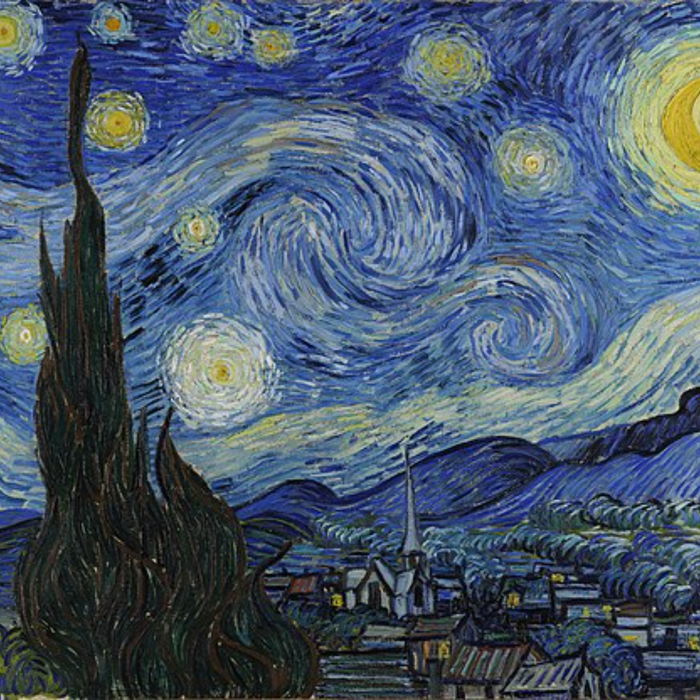
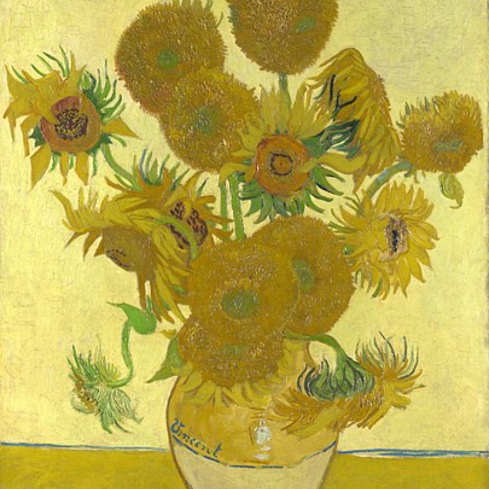
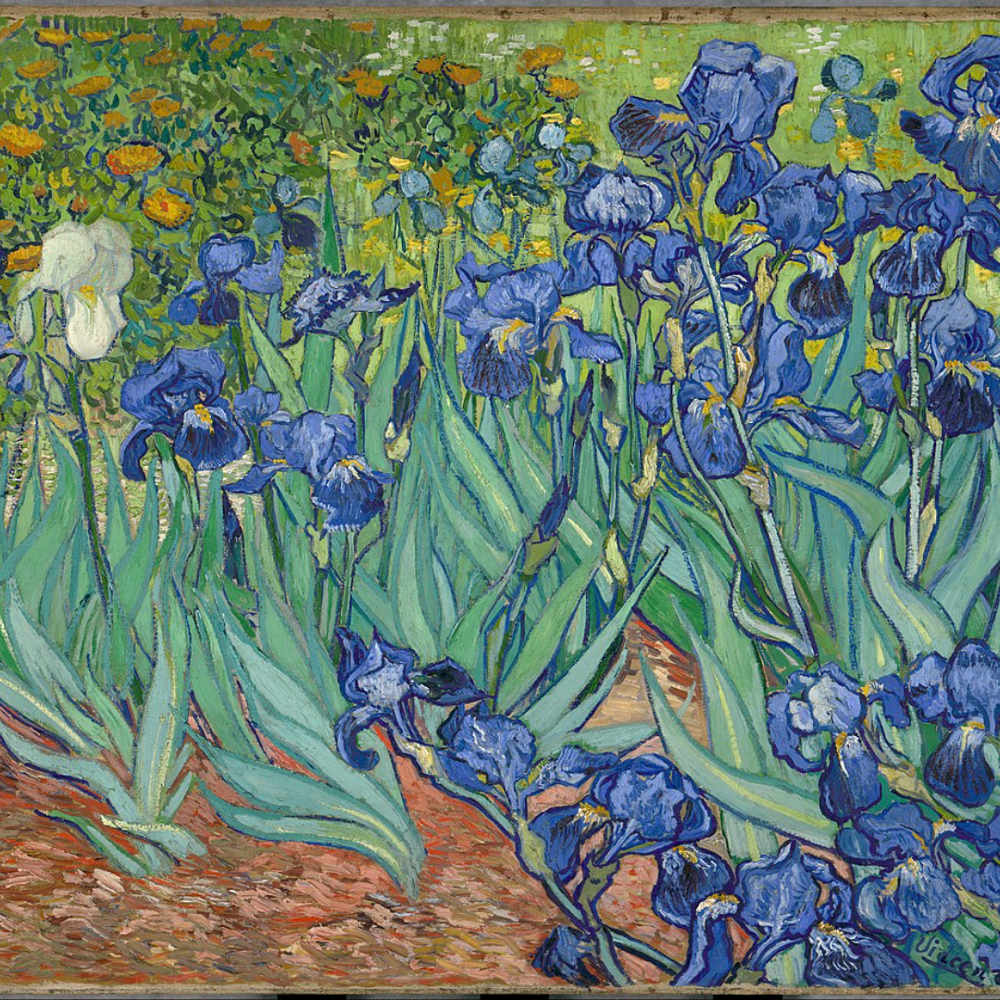
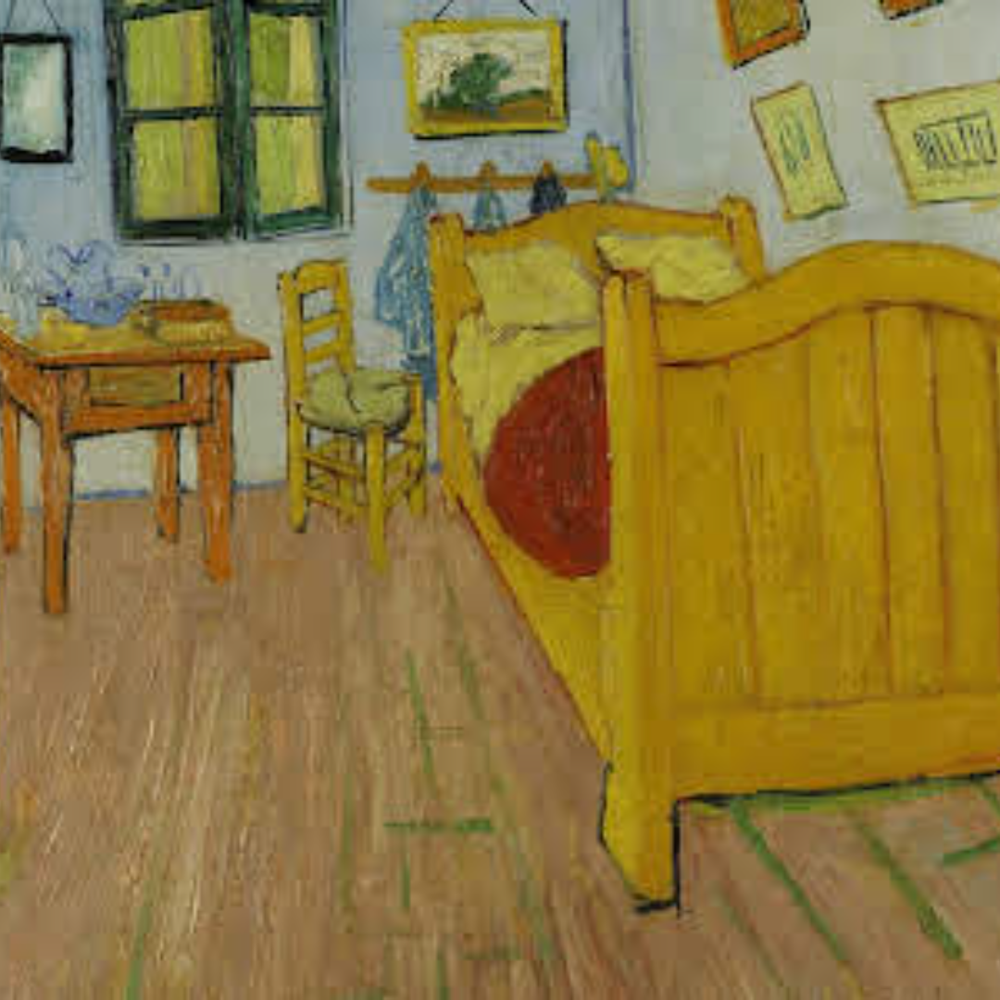

he Starry Night (Dutch: De sterrennacht) is an oil-on-canvas painting by the Dutch Post-Impressionist painter Vincent van Gogh. Painted in June 1889

Sunflowers
Vincent started painting flower still lifes to experiment with colour. Flower still lifes also sold well, which was another reason to paint them.

Irises
Irises is one of several paintings of irises by the Dutch artist Vincent van Gogh, and one of a series of paintings he made at the Saint Paul-de-Mausole asylum in Saint-Rémy-de-Provence, France, in the last year before his death in 1890.

The Bedroom
While he was in Arles, Van Gogh made this painting of his bedroom in the Yellow House. He prepared the room himself with simple furniture and with his own

Café Terrace at Night
Café Terrace at Night is an 1888 oil painting by the Dutch artist Vincent van Gogh. It is also known as The Cafe Terrace on the Place du Forum, and, when first exhibited in 1891, was entitled Coffeehouse, in the evening.